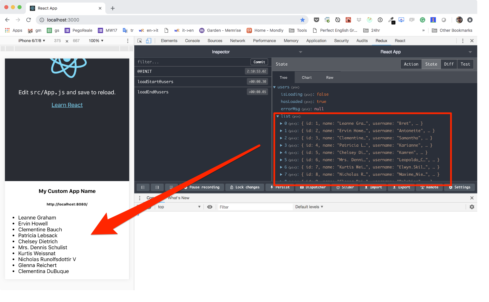
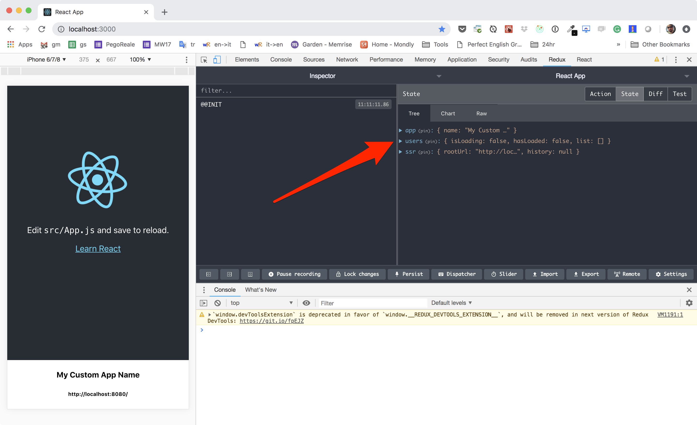

Users Feature
In this feature we are going to fetch and display a list of users from a jsonplaceholder API.
By the end of this tutorial we should reach together a similar outcome:

Step 1 - the reducer
Let's start with the boring part. The reducer.
We need to keep track of the loaded users, as well of some meta data like:
- is the loading happending?
- did we perform our first load? Or are we reloading?
Here is the reducer code that I've come up with.
Put this into /src/features/users/users.reducer.js:
export const initialState = {
isLoading: false,
hasLoaded: false,
errorMsg: null,
list: [],
}
/**
* Actions
*/
export const LOAD_START = 'loadStart@users'
export const LOAD_END = 'loadEnd@users'
export const LOAD_FAILED = 'loadFailed@users'
export const loadStart = () => ({
type: LOAD_START,
})
export const loadEnd = users => ({
type: LOAD_END,
payload: users,
})
export const loadFailed = errorMsg => ({
type: LOAD_FAILED,
payload: errorMsg,
})
/**
* Handlers
*/
export const actionHandlers = {
[LOAD_START]: (state) => ({
...state,
isLoading: true,
}),
[LOAD_END]: (state, { payload }) => ({
...state,
isLoading: false,
hasLoaded: true,
list: payload,
}),
[LOAD_FAILED]: (state, { payload }) => ({
...state,
isLoading: false,
hasLoaded: true,
errorMsg: payload,
}),
}
export default (state = initialState, action) => {
const handler = actionHandlers[action.type]
return handler ? handler(state, action) : state
}
NOTE: If you want to deepen the understanding of this code, have a read at the reducer article
Now we can add the reducer to the feature's manifest in
src/features/users/index.js:
import users from './users.reducer'
// exports the features capabilities:
export const reducers = { users }
export const services = []
export const listeners = []
And finally we activate our feature by listing it in the features manifest
src/features/index.js:
export default [
require('./users'),
]
If everything went well, you should be able to see the new reducer correcly listed in the app' state (using Redux devTools):

Step 2 - the service
I use to call Redux asynchronous actions "services". It is shorter and IMHO does a better job of representing the purpose of that code. You can find some more details here.
Anyway in this file we write the logic that is in charge of fetching data from
the web and populate our reducer. All the stuff goes into
src/features/users/users.service.js:
import { loadStart, loadEnd, loadFailed } from './users.reducer'
export const loadUsers = () => async (dispatch, getState) => {
try {
dispatch(loadStart())
const { ssr } = getState()
const req = fetch('https://jsonplaceholder.typicode.com/users')
const res = await ssr.await(req)
const data = await res.json()
dispatch(loadEnd(data))
} catch (err) {
dispatch(loadFailed(err.message))
}
}
Note how we use the ssr helper to wrap our HTTP Request. We don't really need
it right now because we are not yet running this thing on the server. But keep in
mind that this is the only thign you need to put in place in order to have a
correct and fluent server side rendering!
Simple, right?
Step 3 - the container
It's now the right moment to finally step into some React coding and use the data
we store in the Redux' state to provide some decent UI. Paste the following code
into src/features/users/Users.container.js:
import React from 'react'
import { connect } from 'react-redux'
import { loadUsers } from './users.service'
const mapState = ({ users }) => users
const mapDispatch = { loadUsers }
const styles = {
error: { color: '#f00' },
list: { textAlign: 'left' },
}
class Users extends React.Component {
constructor (props) {
super(props)
const { list, loadUsers } = this.props
if (!list.length) loadUsers()
}
render () {
if (this.props.isLoading) {
return <div>loading...</div>
}
if (this.props.errorMsg) {
return (
<div style={styles.error}>
{this.props.errorMsg}
</div>
)
}
return (
<ul style={styles.list}>
{this.props.list.map(user => (
<li key={`user-${user.id}`}>{user.name}</li>
))}
</ul>
)
}
}
export default connect(mapState, mapDispatch)(Users)
I did my best to keep this as simple as possible. You can do a way better job in structuring this thing into some dumb components and, of course, by applying prop-types, or Flow or TypeScript...
But I would like you to notice that I've used constructor() instead of
the most obvious componentDidMount for my network request.. I did that on
purpose so to make this container server side compatible.
React does not trigget componentDidMount durig ssr and at the moment of the
writing (Nov18) there still some uncertainty about how new versions of React will
handle asynchronous rendering.
Step 4 - use the feature
The last step would be to place the <Users /> container somewhere within our
<App /> so that it can be rendered, the network request triggered using our
service, the reducer updated and the users list produced.
Before we do that let's have the users feature's manifest file to export the
ui entry point. Edit src/features/users/index.js as follow:
import loadable from 'react-loadable'
import users from './users.reducer'
// exports the features capabilities:
export const reducers = { users }
export const services = []
export const listeners = []
// exports the UI entry point asynchronously:
export const Users = loadable({
loader: () => import('./Users.container'),
loading: () => 'loading...'
})
With this step done, we can now use the feature in src/App.js:
...
import { Users } from './features/users'
...
class App extends Component {
render() {
return (
...
<Users />
</div>
)
}
}
The end result should look like this:
A word on async features
I'm sure you noticed that we export out Users containers with
react-loadable.
We could have done a much easier export like:
export { default as Users } from './Users.container'
So why react-loadable?
Well, that is to optimize the bundle size of our app of course! Instead of producing a single big production bundle file, Webpack is going to generate a smaller bundle for the main app, and another for the users feature.
Weeeelll... more or less! The truth is that the reducer is going to be part of the main bundle as well. I played a lot with dynamically loaded reducers and I must say I find that practice a bit confusing.
It will make you spare some bites in the main bundles, at the cost of increasing the state manager complexity.
Reducers should hold a very simple responsibility: migrating the state to a new version. This code is quite simple and does not require error handling because it is not supposed to fail (if it does it's a bug, not an error to handle!).
IMHO Services hold the complex part of your business logic. Services deal with network, user input, storage strategies... Services deal with stuff that can (and will) fail. They do need to perform error handling... extensively!
And then containers/components may bring alogn a big portion of code. React and CSS, icons and background images... It could sum up to a big chunk of code.
With all that in mind, I believe is a nice compromise to load you reducers synchronously and your UI/Services asynchronously.